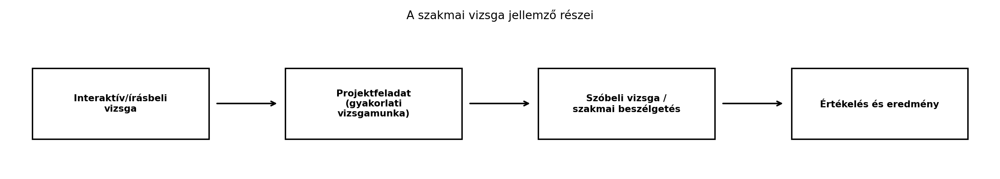

Képzeld el, hogy három hét múlva szakmai vizsgázol. A tankonyhán már sok ételt elkészítettél, de most az a kérdés: hogyan áll össze a vizsga, milyen feladatokat kapsz, és mivel tudod bebiztosítani magad az elméleti, a gyakorlati és a szóbeli részen? A vizsgafelkészülés nem azt jelenti, hogy új tananyagot kezdesz tanulni, hanem azt, hogy a már megtanultakat rendszerbe szeded, megtalálod a hibákat, és begyakorlod azt a formát, amelyben a tudásodat mérni fogják.
A vizsga egy folyamat, nem egyetlen nap. Először az elméleti tudást mérik, aztán a gyakorlati munkát, majd szóban kell megmagyarázni a döntéseidet. Az alábbi ábra a jellemző vizsgarészeket mutatja.

A folyamatábra azt üzeni: ne csak a főzésre készülj! A vizsgán az elméleti ismeret, a gyakorlati kivitelezés és a szóbeli magyarázat egyaránt értékelődik. Ha valamelyik részre nem készülsz, a másik kettő csak részben mentheti meg az eredményt.
Jogszabály. A szakmai vizsga kereteit a szakképzésről szóló 2019. évi LXXX. törvény, a szakképzésről szóló törvény végrehajtási rendeletei, valamint a szakmára kiadott Képzési és kimeneti követelmények (KKK) és Programtanterv (PTT) határozzák meg. A vizsgarészek, a pontszámok, a súlyok és az értékelési szintek idővel változhatnak; a kitűzött vizsgafeladat és a mindenkori vizsgaszabályzat a mérvadó (ellenőrizendő: aktuális KKK, vizsgaszabályzat).
A szakács szakmai vizsgán jellemzően három vizsgarésszel találkozol. A régi OKJ-rendszerben ezeket gyakran írásbeli, gyakorlati és szóbeli vizsgarészként nevezték. A mai szakképzési rendszerben az elnevezések lehetnek interaktív vizsga, projektfeladat és szóbeli vizsga vagy szakmai beszélgetés (ellenőrizendő: aktuális KKK). A táblázat azt mutatja, hogy az egyes részek mit mérnek, és mire érdemes készülni.
| Vizsgarész | Mit mér | Jellemző feladatok | Felkészülési fókusz |
|---|---|---|---|
| Interaktív/írásbeli | Elméleti tudás, számítás, higiénia, allergének, jogszabályi alapok | Teszt, technológiai sorrend, esettanulmány, anyaghányad, kalkuláció | Fogalmak, határértékek, képletek, szakszavak |
| Projektfeladat (gyakorlat) | Gyakorlati szakmai munka, munkaszervezés, élelmiszer-biztonság | Menüsor készítése munkatervvel, technológiai lappal, tálalással | Munkaterv, időbeosztás, maghőmérés, higiénia, adagolás |
| Szóbeli vizsga | Szakmai beszéd, összefüggések, indoklás | Tétel kifejtése, kiegészítő kérdések, esetmegbeszélés | Tételvázlatok, hangos felelés, ok-okozati magyarázat |
Definíció. A projektfeladat olyan gyakorlati vizsgamunka, amelyben a vizsgázó egy meghatározott vendéglátó feladatot old meg – például menüsor készítése munkatervvel, technológiai lappal, kalkulációval és tálalással. A vizsgabizottság nemcsak a kész ételt nézi, hanem a munkafolyamatot, a higiéniát és a dokumentációt is.
Szabály. A vizsgán az értékelés általában pontozólapon történik. A pontozólap a vizsgarészeken belül a szakmai tartalmat, a munkabiztonságot, az élelmiszer-biztonságot, a gazdálkodási számításokat és a bemutatást értékeli. A konkrét pontszám, súlyozás és a megfelelési minimum a vizsgaszabályzatban és a KKK-ban rögzített (ellenőrizendő: aktuális pontozási útmutató).
A szóbeli vizsgán a tételsorból húzol egy tételt. A tétel nem egyetlen kérdés, hanem szakmai témakört jelöl meg, például egy ételcsoportot, egy technológiát, egy higiéniai helyzetet vagy egy számítási feladatot. A bizottság arra kíváncsi, hogy a konyhai gyakorlatot elméletileg is meg tudod-e indokolni.
Példa. Tétel: Rántott sertésszelet, rizskörettel és fejes salátával.
A jó felelet vázlata így épül fel:
Szabály. A felelésed ne receptfelmondás legyen, hanem szakmai magyarázat: nyersanyagtól a tálalásig. Kezdd mindig a fogalommal vagy a technológiai besorolással, mondd el a lépéseket, emeld ki a kritikus pontot, az allergént és a számítást. A vázlatot írd fel a jegyzetlapra kulcsszavakkal, mielőtt beszélni kezdesz.
Tilos. A szóbeli vizsgán ne ugorj fejből a receptközlésbe. Ha kihagyod a hőmérsékletet, az allergént vagy a keresztszennyeződést, a bizottság rákérdez, és a kapkodás pontvesztést okoz.
Az alábbi öt mintafeladat a vizsgán gyakori témaköröket fedi le: higiénia, nyersanyag/allergén, technológia, táplálkozástan és számítás. A válaszok mutatják azt a mélységet, amelyet a vizsgán elvárnak.
Feladat: A főtt húslevest 3 órával ezelőtt hűtőbe tették. A leves közepén még mindig 45 °C-ot mérsz. Mi a hiba, és mit teszel?
Higiénia. A hűtés nem volt megfelelő. A 45 °C a veszélyes hőmérsékleti zónában van, ahol a baktériumok gyorsan szaporodhatnak (ellenőrizendő: pontos zónahatár a NÉBIH-útmutatóban és a HACCP-tervben). A hiba oka lehet: túl nagy edényben, vastag rétegben hűtötték, nem keverték, vagy a hűtő túlterhelt. Megelőzés: következő alkalommal kisebb, lapos edényben, jéghideg vízfürdőben, keverve hűtsd, és hőmérővel ellenőrizd a gyors visszahűtést. Döntés: a leves 3 óra alatt csak 45 °C-ig hűlt, vagyis a könyv visszahűtési határát (a főzés végétől 2 órán belül 20 °C alá, további 4 órán belül 5 °C alá; tanulási érték; ellenőrizendő: NÉBIH-útmutató / hatályos rendelet / HACCP-terv) már túllépte. Ezért a leves nem szolgálható fel, és újramelegítéssel sem menthető meg (a spórás baktériumok, például a Clostridium perfringens és a Bacillus cereus toxinja hőre stabil lehet): selejtezd, és dokumentáld a helyesbítő tevékenységet. A fenti hűtési technikák (kisebb, lapos edény, jeges vízfürdő, keverés, sokkoló, hőmérős ellenőrzés) a következő alkalomra szólnak, megelőzésként.
Feladat: Egy vendég salátát kér. A salátához majonézes öntetet készítesz, amelybe mustárt is teszel. Melyik allergént kell jelezned?
Allergén. A majonéz tojást, a mustár mustárt tartalmaz. Ha a majonézhez citromlét és ecetet is használsz, az ecet kén-dioxidot (szulfitot) tartalmazhat. A tálalásnál a vendéget pontosan tájékoztatni kell; a menüben és az allergéntáblázatban a „tojás”, „mustár”, valamint az összetevőtől függően a „kén-dioxid és szulfitok” szerepeljen (ellenőrizendő: 1169/2011/EU II. melléklet, hazai allergén-tájékoztatási előírás).
Feladat: Sorold be a pörkölt készítését a hőkezelő eljárások közé, és nevezd meg a kritikus pontot.
A pörkölt jellemzően párolásos–hőkezelési eljárással készül: először zsiradékban pirítják a hagymát és a húst, majd fedő alatt, kevés folyadékban párolják. A kritikus pont a hús teljes átsülése és puhulása; a maghőmérséklet ellenőrzése a szabály szerint történik, a hús vastagabb részébe szúrt maghőmérővel (ellenőrizendő: aktuális HACCP-érték). A nyers és kész étel különválasztása is kritikus a keresztszennyeződés megelőzése miatt.
Feladat: Egy 100 g-os készételben 10 g fehérje, 12 g zsír és 30 g szénhidrát van. Számold ki az energiaértékét kJ-ban.
A tájékoztató energiaegyenérték: fehérje 17 kJ/g, zsír 37 kJ/g, szénhidrát 17 kJ/g (1169/2011/EU XIV. melléklet; ellenőrizendő).
A készétel 100 g-os energiaértéke tehát körülbelül 1 124 kJ; kcal-ban a 4/9/4 tényezőkkel: (a -gyel való osztás, , csak közelítő átváltás).
Feladat: Egy 10 adagos zöldségleveshez 0,8 kg tisztított vegyes zöldség kell. Hány kg bruttó zöldséget vételezz 30 adaghoz, ha a tisztítási veszteség átlagosan 25%?
Számítás. Adott: 10 adag nettó zöldség 0,8 kg; 30 adag nettó zöldség ; veszteség . Keresett: bruttó tömeg . Képlet: . Behelyettesítés: . Ellenőrzés: 3,2 kg-ból 25% hulladék 0,8 kg, marad 2,4 kg; ez 30 adagra 0,8 kg/10 adag. Helyes.
A vizsga elméleti részében a számítási feladatoknál nem elég az eredmény. A pontozás a képlet felírását, a mértékegységes behelyettesítést és az ellenőrzést is értékeli.
Számítás. Egy vizsgázó az interaktív vizsgán 80 pontot, a projektfeladaton 70 pontot, a szóbeli vizsgán 90 pontot ért el. A vizsgarészek súlyai ebben a tanulási példában: interaktív 30%, projektfeladat 50%, szóbeli 20% (ellenőrizendő: aktuális vizsgaszabályzat). Mennyi a súlyozott vizsgapontja?
Adott: interaktív pont
,
projekt pont
,
szóbeli pont
;
súlyok
,
,
.
Keresett: súlyozott pont
.
Képlet:
.
Behelyettesítés:
.
Ellenőrzés: ha mindegyik rész 100 pontos, a maximális súlyozott pont
100. A 77-es érték közepesen jó, a szóbeli jobb eredménye csak 20%-ban
javított. A súlyok tanulási adatok, a valódi súlyokat a vizsgaszabályzat
adja.
Figyelem. A vizsga akkor sikeres, ha minden vizsgarészen eléred a vizsgaszabályzatban előírt minimumot is; a súlyozott pont csak ezután számít, tehát egy jó átlag nem pótolja egy vizsgarész elégtelen szintjét. A szóbeli vizsgarész megléte az új szakképzési rendszerben a szakács KKK-tól függ. (ellenőrizendő: aktuális KKK és vizsgaszabályzat)
Számítás. A vizsgán azt a feladatot kapod, hogy 35 adag rizskörethez rendelj nyers rizst. A technológiai lap szerint 10 adaghoz 0,7 kg rizs kell (adagonként 70 g nyers rizs; tanulási érték, ellenőrizendő: üzemi anyaghányad). A kimérésnél, válogatásnál 2% veszteséggel számolunk (tanulási érték). Hány kg rizst rendelj?
Adott: 10 adag nettó
;
adagszám 35; veszteség
.
Keresett: bruttó szükséglet 35 adagra.
Nettó 35 adagra:
.
Képlet:
.
Behelyettesítés:
.
Ellenőrzés: 2,5 kg-ból 2% veszteség
,
marad
;
ez 35 adagra 0,7 kg/10 adag. Helyes.
A vizsgafelkészülés legfontosabb eszköze a kompetenciatérkép. Ez azt jelenti, hogy a vizsgakövetelmények témaköreit a könyv fejezeteihez, a kidolgozott példákhoz és a saját hibáidhoz kapcsolod.
Eljárás. Az ismétlési tervet az alábbi lépésekben készítsd el:
Továbbvitt eredmény. Az itt elkészített ismétlési terv – különösen a gyakorlati menütervvel és munkatervvel végzett szimuláció – közvetlenül a Gyakorlati vizsga: menükészítés munkatervvel és értékelés alfejezetben használható. A munkaterv szerkezetét a Munkaterv a napi menü technológiai sorrendjében alfejezetben tanultuk.
A vizsgán a következőket kell ellenőrizned magadban:
Figyelem. A konkrét pontozási szempontok vizsgánként és bizottságonként változhatnak; a fenti lista típus szerint mutatja be az értékelési területeket, nem a hivatalos pontozólapot (ellenőrizendő: aktuális pontozási útmutató).
A vizsgázó csak a receptet magolja, de a kritikus pontot nem tudja. Oka: elméleti tanulás technológiai összefüggések nélkül. Javítás: minden ételnél tedd fel a kérdést: mi a hőmérséklet, mi a hűtés, mi az allergén, mi a keresztszennyeződés?
A számításnál nem írja ki a képletet, hanem fejben számol. Oka: gyakorlás hiánya. A vizsgán a pontozás a levezetést is értékeli. Javítás: minden számításnál írd le a képletet, a behelyettesítést és az ellenőrzést.
A szóbeli felelet elhadarva, a tálalási és higiéniai rész kimarad. Oka: nincs előre begyakorolt tételvázlat. Javítás: minden tételhez készíts 6-7 pontos vázlatot, és hangosan gyakorold.
A gyakorlati vizsgán nincs munkaterv, vagy nincs maghőmérő a kézben. Oka: a vizsgázó a kész ételre koncentrál, nem a folyamatra. Javítás: a Munkaterv a napi menü technológiai sorrendjében szerint készíts időrendet, gépekkel és ellenőrzési pontokkal; a maghőmérőt a kötényedben tartsd.
Egy szakács tanuló a szóbeli vizsgán a marhapörkölt tételét húzta. Szépen felsorolta az alapanyagokat, majd elmondta, hogy a hagymát zsíron pirítja, beleteszi a húst, és paprikával fűszerezi. A bizottság rákérdezett: „Miért fontos a hús elősütése, és milyen maghőmérséklettel igazolja a hús átfőttségét?” A tanuló zavarba jött; a receptet tudta, de az okokat nem. Végül azt sem említette, hogy a pörkölt köretéül adott galuska (nokedli) tojást és glutént tartalmaz, ezért allergénként jelölni kell. A pontszáma azért lett gyengébb, mert a technológiát nem láncban mondta el, hanem elszigetelt lépésekben. A tanulság: a vizsgán a bizottság a szakács gondolkodását látja, nem a receptmemóriáját. Minden tételt a nyersanyag→előkészítés→hőkezelés→higiénia→tálalás→számítás láncban fejts ki.
1. feladat (A)
Sorold fel a szakmai vizsga három jellemző vizsgarészét, és mindegyikhez
írj egy-egy jellemző feladatot.
2. feladat (A)
A szóbeli vizsgán 24 pontot értél el a 40 pontból. Hány százalékos az
eredmény?
3. feladat (B)
Állítsd helyes sorrendbe a vizsgafelkészülési lépéseket:
vizsgaszimuláció, kompetenciatérkép, mintafeladatok, heti ütemterv,
hibanapló vezetése.
4. feladat (B)
10 adag salátához 0,6 kg tisztított uborka kell. Hány kg bruttó uborkát
rendelj 20 adaghoz, ha a tisztítási veszteség 15%?
5. feladat (C)
Készíts egy egyhetes ismétlési tervet a könyv öt fő területére:
higiénia, nyersanyagismeret, technológia, ételcsoportok, számítások.
Minden napra jelölj ki egy témát és egy ellenőrző feladatot.
6. feladat (D)
Egy vizsgázó a gyakorlati vizsgán rántott csirkemellet készít. A
munkatervében nem tünteti fel a nyers és kész hús különválasztását, és a
maghőmérséklet-ellenőrzést sem jelöli. Elemezd: mi a hiba, mi a
kockázat, hogyan javítanád a munkatervet?
1. feladat (A)
- Interaktív/írásbeli: teszt, technológiai sorrend, számítás.
- Projektfeladat (gyakorlat): menüsor készítése munkatervvel,
tálalással.
- Szóbeli vizsga: tétel kifejtése, kiegészítő kérdések.
(A konkrét elnevezések a vizsgaszabályzat szerint ellenőrizendők.)
2. feladat (A)
.
Az eredmény 60 százalék.
3. feladat (B)
Helyes sorrend: 1. kompetenciatérkép, 2. heti ütemterv, 3.
mintafeladatok, 4. hibanapló vezetése, 5. vizsgaszimuláció. (A hibanapló
vezetése folyamatos, de a nagy szimuláció a végén jön.)
4. feladat (B)
Adott: 10 adag nettó 0,6 kg; 20 adag nettó
;
veszteség
.
Keresett: bruttó tömeg
.
Képlet:
.
Behelyettesítés:
.
Ellenőrzés: 1,41 kg-ból 15% hulladék
,
marad
;
ez 20 adagra 0,6 kg/10 adag. Helyes.
5. feladat (C)
Példa egyhetes tervre:
| Nap | Téma | Ellenőrző feladat |
|---|---|---|
| Hétfő | Higiénia, HACCP | Hűtési hiba elemzése, kritikus határok |
| Kedd | Nyersanyagismeret | Allergének, húsrészek, zöldségcsoportok |
| Szerda | Konyhatechnológia | Hőkezelések besorolása, panírozás |
| Csütörtök | Ételsorok | Egy leves és egy főétel technológiai lapja |
| Péntek | Számítások | Bruttó–nettó, anyaghányad, kalkuláció |
| Szombat | Szóbeli szimuláció | Tételvázlat, hangos felelet |
| Vasárnap | Gyakorlati szimuláció | Menüterv munkatervvel, dokumentálás |
6. feladat (D)
A hiba: a munkaterv nem tartalmazza a nyers és kész termék
elkülönítését, valamint a hőkezelési CCP-t. A kockázat
keresztszennyeződés: a nyers csirkemellről baktériumok kerülhetnek a
kész köretre, salátára. A hőkezelés ellenőrzése nélkül nem igazolható,
hogy a hús maghőmérséklete elérte a biztonságos értéket (ellenőrizendő:
HACCP-terv). Javítás: a munkatervben külön sorban kell szerepelnie a
nyers előkészítésnek, a kézmosásnak, a külön vágódeszkának és a kész hús
hőmérővel végzett ellenőrzésének. A munkaterv szerkezetét a Munkaterv a napi menü technológiai sorrendjében
alfejezetben tanultuk.
A szakmai vizsga jellemzően három részből áll: interaktív/írásbeli, projektfeladat (gyakorlat) és szóbeli vizsga. A pontos elnevezések, súlyok és pontozások a mindenkor hatályos KKK-ban és vizsgaszabályzatban vannak; a tankönyv tanulási példákat ad (ellenőrizendő). Az elméleti felkészülés a kompetenciatérképből indul: témakörökhöz fejezeteket, hibákat és mintafeladatokat rendel. A számításoknál mindig kövesd a közös szerkezetet: adott, keresett, képlet, behelyettesítés, eredmény, ellenőrzés. A szóbeli felelet vázlata: nyersanyag, előkészítés, technológia, higiénia, tálalás, számítás. Az egyhetes ismétlési terv és a vizsgaszimuláció előkészíti a gyakorlati vizsgát. Továbbvitt eredmény. Az itt elkészített ismétlési terv – benne a menütervvel, munkatervvel és kalkulációval – a Gyakorlati vizsga: menükészítés munkatervvel és értékelés alfejezetben használható.
A fejezet a szakképzésről szóló 2019. évi LXXX. törvényre, a szakképzési végrehajtási rendeletekre és a szakmai KKK/PTT-re hivatkozik. A vizsgarészek, a pontszámok, a súlyok, az időtartamok és a megfelelési minimumok tanulási példák (ellenőrizendő: aktuális KKK, vizsgaszabályzat, pontozási útmutató). A hőmérsékleti határok, így a veszélyes zóna, a hűtési idő és a hús maghőmérséklete tanulási értékek (ellenőrizendő: NÉBIH-útmutató, üzemi HACCP-terv). Az energiaegyenértékek ( kJ/g fehérje, kJ/g zsír, kJ/g szénhidrát) tájékoztató tanulási adatok (ellenőrizendő: aktuális tápanyagtáblázat). Az allergének felsorolásánál a 14 jelölésköteles allergén az 1169/2011/EU rendelet II. melléklete alapján ellenőrizendő.